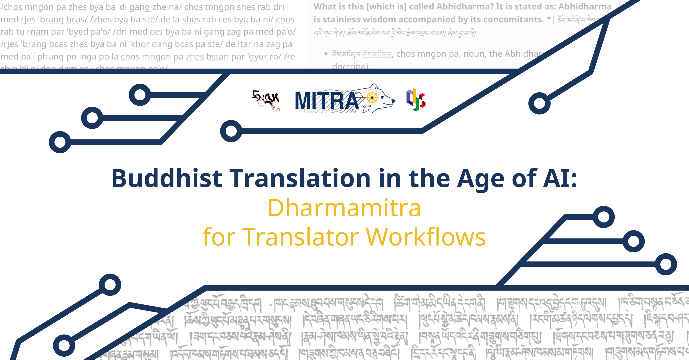
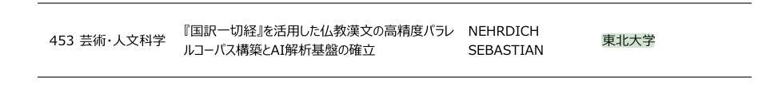
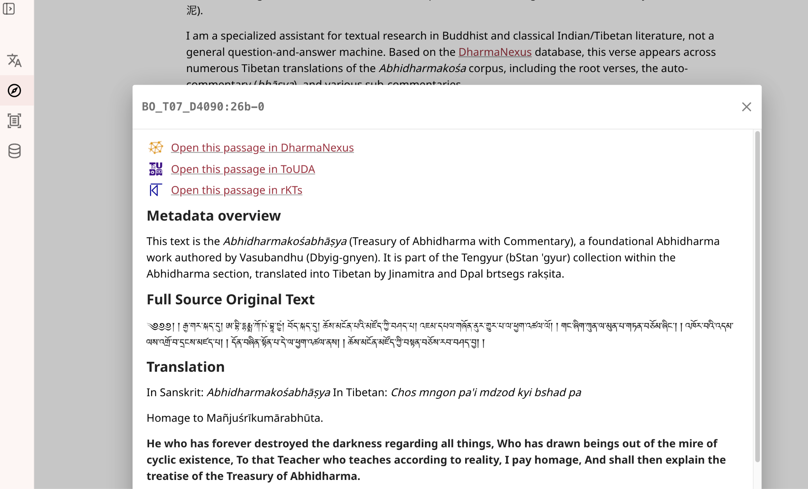
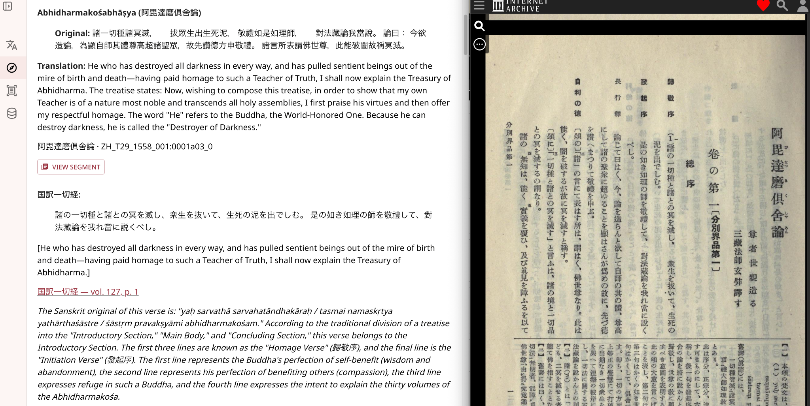
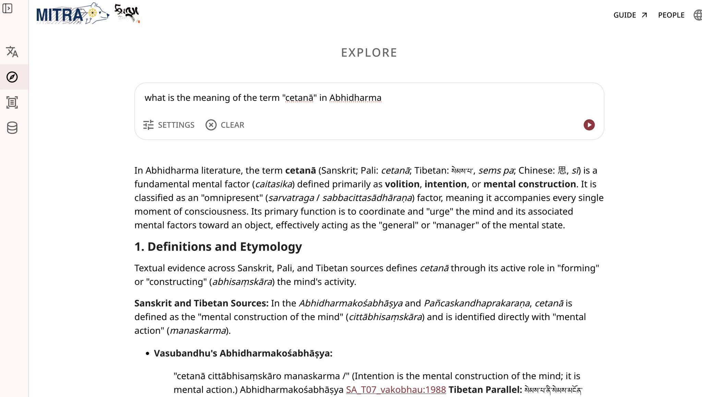
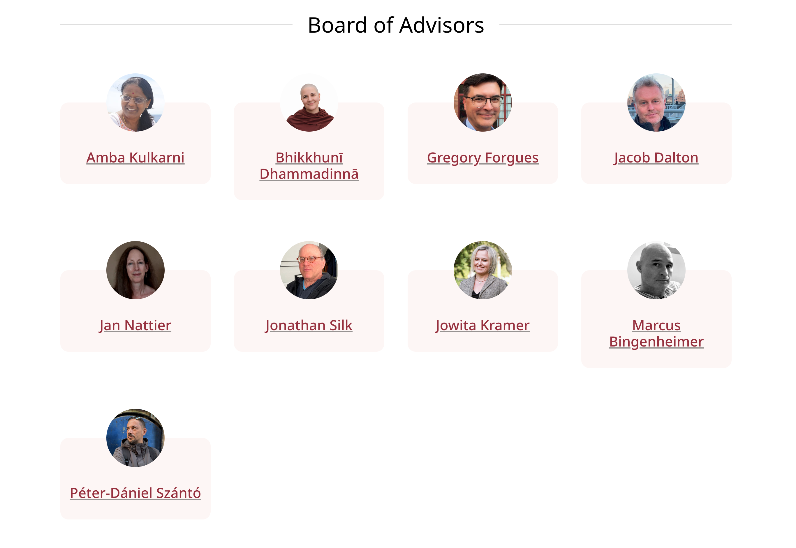
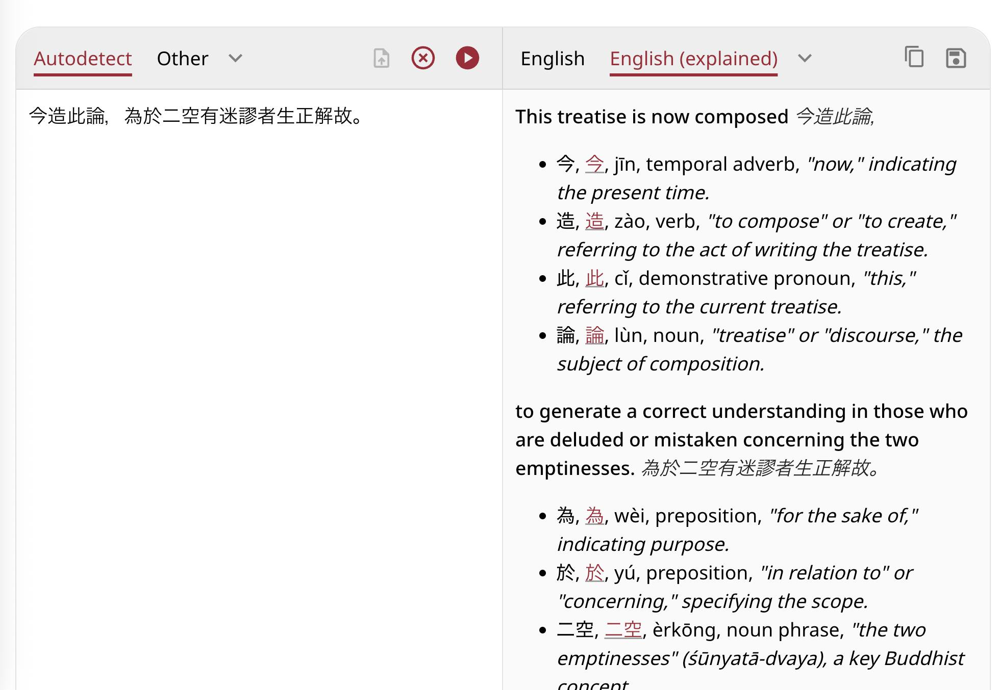
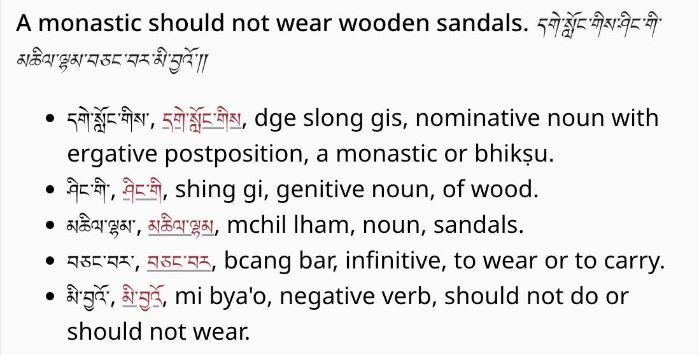
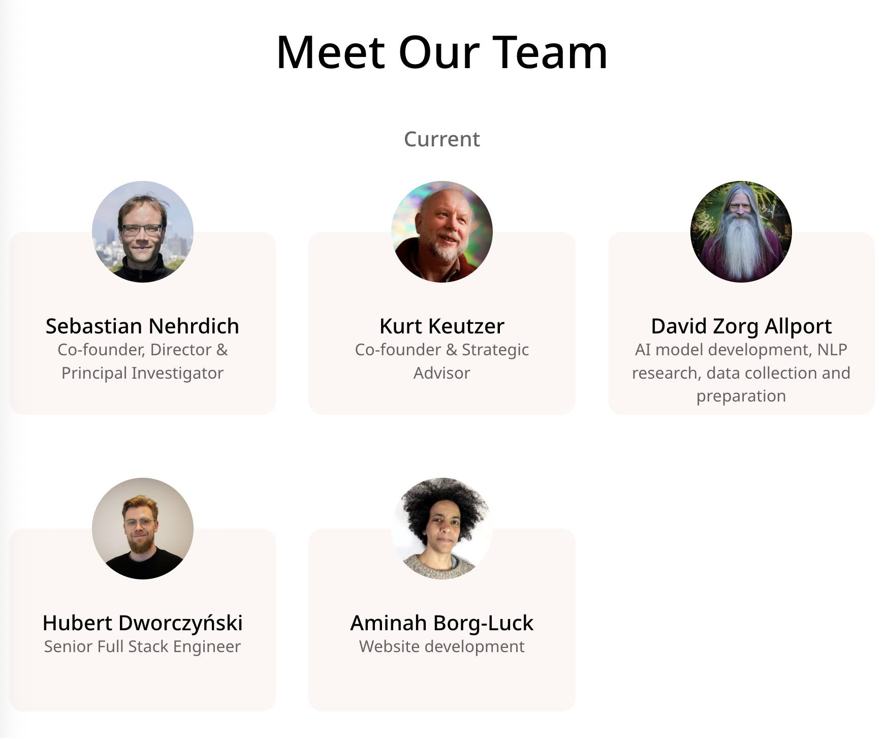

News
July 11, 2026: Translation in the Age of AI: Dharmamitra for Translator Workflows
Dive into Dharmamitra and see how AI’s shaking up translator workflows!
Welcome to Translation in the Age of AI, a global interactive workshop designed to bridge translation and philology in the Buddhist textual world with cutting-edge digital humanities infrastructure. This event explores how modern AI tools can be integrated to support, enhance, and optimize translation and philological research workflows.

June 22, 2026: MEXT AI for Science (SPReAD) Grant
We are pleased to share that the Dharmamitra Project has been awarded a grant of 5 million yen through the Japanese government's MEXT AI for Science (SPReAD) programme. This award supports our ongoing work on the Japanese rendering of the Chinese Buddhist canon in the form of the 国訳一切経, as part of a broader initiative to build a reliable knowledge graph of Buddhist literature that can serve a wide range of research applications. The Dharmamitra Project is sustained by a remarkably diverse community of supporters — from the Tsadra Foundation and Schmidt Sciences in the United States, FoGuang AI in Taiwan, to the Center for Integrated Japanese Studies (CIJS) here in Japan. We are deeply grateful for each of these partnerships, and this new grant from MEXT is a welcome addition that reflects the growing recognition of computational approaches to Buddhist studies within Japan. The award also includes priority access to the SQUID high-performance computing cluster at Osaka University, which will meaningfully strengthen our capacity to develop and train NLP models tailored to the unique challenges of classical Buddhist literature. We look forward to sharing more about this work as it develops.

May 18, 2026: Dharmamitra: Buddhist Philology in the Age of AI
Lecture and workshop at Ludwig-Maximilians-Universität München
Presentation: Dharmamitra in 2026: Current Capabilities and Future Developments
Workshop: Accelerated Sanskrit Textual Schlarship in the Age of Agentic AI
May 16, 2026: Artificial Intelligence in Buddhist Studies
This workshop in Leipzig focuses on the use of artificial intelligence in Buddhist Studies, with particular emphasis on the research tool Dharmamitra. Together with Prof. Nehrdich, participants will discuss current applications, challenges, and future perspectives of AI-assisted research in the field.
Speaker: Prof. Dr Sebastian Nehrdich, Tohoku University
AI meets tradition. Photo: AI-generated. Source: uni-leipzig.de
May 11, 2026: Introducing ‘Segment View’, Expanded Datasets, and More!
🚀 We’re excited to share that Mitra Explore and Mitra Research are getting major upgrades to improve your research experience. 📚
Here is what’s new:
🔍 Introducing ‘Segment View’
We’ve launched a dedicated ‘segment view’ page to deepen your research! You can now access this feature by clicking the ‘view segment’ button—found on the Translate page (when using ‘Research’ mode) and on the Explore page. Once clicked, you will be taken to a detailed page featuring in-depth metadata and intertextual links.
Even better: where available, you can now access folio-level links directly into external databases, including the ToUDA Derge Database and rKTs.

📖 Upgraded Kangyur & Tengyur Datasets
We have upgraded our etext basis for The Kangyur and Tengyur from LHASA (ACIP) to Derge (Esukhia). These new texts offer higher input quality, allowing for seamless linking to other projects and providing a much smoother research experience.
🇯🇵 Taishō Canon & 国訳一切経 Integration
We have digitized the majority of volumes of the Japanese translation of the Taishō canon in form of the 国訳一切経. You can now access extracts of these translations directly within Mitra Explore and Research, complete with links to the original preserved pages on archive.org.

📈 Expanded Tibetan Datasets
Our commitment to comprehensive data continues! We have added significant new datasets for Tibetan, bringing our total coverage to over 14 million segments across the Mitra Explore and Research search indices.
We hope these updates provide valuable support for your work. Explore these new features today and let us know what you think! 🌐
April, 2026: Dharmamitra Platform Update – Introducing Explore
We’ve been very busy over the last months, and we are thrilled to announce a massive update to the Dharmamitra platform!
Here is what’s new: 🔍 From "Search" to "Explore" We’ve officially replaced MITRA Search with MITRA Explore. This isn’t just a name change, it’s a significant upgrade in capabilities. We have added text summaries to the search results, and you can now filter results based on language, collection, category, and even individual texts, which was not possible before with Deep Research. This brings a lot of the power of Deep Research to MITRA Search, and we are happy that this is now possible!
🌐 Enhanced Translation Control You now have more flexibility than ever when using the MITRA translator. For example: You can now translate into Modern Chinese while simultaneously activating the Grammar or Deep Research mode for maximum accuracy and context.
📚 Massive Library Expansion Our database has grown significantly! We’ve added a lot of new material over the past few months. For Tibetan: རིན་ཆེན་གཏེར་མཛོད་ (Rinchen Terdzö): The Precious Treasury of Revelations. གདམས་ངག་རིན་པོ་ཆེའི་མཛོད། (Damngak Rinpoché Dzö): The Treasury of Precious Instructions.
For Chinese (In collaboration with Kanripo / 漢籍リポジトリ): 漢籍 Kanripo Classics (經部): The Confucian Classics and related fundamental texts. 漢籍 Kanripo Masters (子部): Works from various schools of philosophy and masters. 漢籍 Kanripo Daoist Canon (道部): Comprehensive material from the Daoist tradition.
We hope that these updates make the daily work with our platform more productive and pleasant!

April 11, 2026: Dharmamitra and Buddha Nexus Ecosystems in the age of AI with Dr. Sebastien Nehrdich
An online workshop held by the Centre for Buddhist Studies, Kathmandu University at Rangjung Yeshe Institute.
March 28–29, 2026: OCR and Beyond Workshop at Tohoku University
On March 28 (Sat) and 29 (Sun), Center for Integrated Japanese Studies (CIJS) at Tohoku University hosted the international workshop “OCR AND BEYOND” focusing on philology and digital archives in the age of AI. The workshop featured discussions on cutting-edge computer-aided annotation workflows, including Sanskrit studies utilizing Generative AI, the digitization of Tibetan, Nepalese, and Japanese Esoteric Buddhist texts, and the construction of structured corpora.
March 20, 2026: Dharmamitra: A Platform to Support Research across Language Boundaries on Buddhist Textual Material
Lecture, The Gandhāra Corpora Lecture Series, Faculty of arts and Philosophy, Ghent University, Belgium.
The Center for Integrated Japanese Studies (CIJS) at Tohoku University will host a two-day workshop titled "Japanese Studies in Japan and Belgium" on March 19 and 20, 2026. The event will be held at Ghent University, Belgium, and is co-organized with the Ghent University Institute for Japanese Studies.
March 17, 2026: DharmaNexus as a Multilingual Graph of Buddhist Intertextuality: Design Choices, Research Uses, and Future Applications
Locating textual parallels, translations, citations, and topically related passages across vast collections of texts in multiple languages is a basic requirement of philological work in Buddhist Studies.
March 13, 2026: Is this the end of (Buddhist) philology as we know It? If so, what’s next?
Hybrid lecture, International Institute for Asian Studies, Leiden University, Netherlands
With rapidly growing digital collections and increasingly powerful AI and information-retrieval tools, textual Buddhist Studies is undergoing a paradigm shift. How are these new tools already influencing research practice, and what new questions and methods might they enable in the near future?
February, 2026: Dharmamitra Board of Advisors
We are happy to announce that Dharmamitra now features a **Board of Advisors**. They will advise on the kind of data that Dharmamitra includes, on the functionality and design of our various applications, and on making sure that we keep providing tools and utility that really matter for our core audience. We are more than grateful for their support and expertise!

January 31, 2026: Dharmamitra: A data-driven platform for the research of Buddhist texts in multiple languages using advanced NLP methods
Forum, 第30回情報知識学フォーラム「文化と社会をとらえるデータサイエンスの最前線」 (The 30th Information and Knowledge Science Forum: Data Science at the Forefront of Capturing Culture and Society), Japan Society for Information and Knowledge (情報知識学会), Doshisha University Osaka Satellite Campus, Osaka, Japan
January 10, 2026: AI and Indological/Buddhological researches: Dharmamitra/Dharmanexus and its Application
Conference, インド思想史学会 第32回学術大会 (Association for the Study of the History of Indian Thought, The 32nd Annual Conference), Kyoto University, Faculty of Letters Building, Lecture room 7, Kyoto, Japan (Face-to-face & Online)
Co-presented with Kengo Harimoto (University of Naples "L'Orientale"). Recent advances in AI are transforming many areas of scholarship, and the field of Indology is no exception. We introduced Dharmamitra, an AI-assisted research environment that provides advanced tools for philological work across the Classical Asian languages: Pāli, Sanskrit, Tibetan, and Chinese.
December 21, 2025: Translation, OCR, and Semantic Retrieval: Current Status and Future Outlook of the Dharmamitra Ecosystem
Symposium, 仏教学とデジタル・ヒューマニティーズ国際シンポジウム (Buddhist Studies and Digital Humanities International Symposium), Tokyo, Japan
I presented on the current status and future outlook of the Dharmamitra ecosystem, covering translation, OCR, and semantic retrieval capabilities for Buddhist texts. The symposium was held at Tokyo International Forum Hall D5 and focused on "The Significance of Humanities and Research Infrastructure Development in the DX-AI Era."
December 21, 2025: Dharmamitra: A Platform that Makes Translation and Discovery of Buddhist Texts Possible Across Language Barriers
On December 21, we where part of the panel “AI in the Fo Guang Dictionary of Buddhism English Translation Project and MITRA” at the 11th Symposium of Humanistic Buddhism
I presented on the Dharmamitra platform as part of the panel "AI in the Fo Guang Dictionary of Buddhism English Translation Project and MITRA." The panel showcased how emerging AI tools support large-scale Buddhist translation and lexicographical research. I introduced Dharmamitra as a collaborative AI-driven platform developed by Tohoku University with the Tsadra Foundation and Berkeley AI Research Lab, which employs Large Language Models for high-quality machine translation of Sanskrit, Pali, Tibetan, and Chinese alongside vector-based semantic retrieval.
December 3, 2025: Building the Foundations of Buddhist Philology through Digital Humanities: Exploring the Potential of the Tohoku University Digital Archives (ToUDA)
Workshop and Symposium, Center for Integrated Japanese Studies (CIJS), Tohoku University, Sendai, Japan
November 25, 2025: From OCR via Machine Translation to Semantic Search: The Dharmamitra AI stack for Multilingual Buddhist Philology
Talk, at 서울대학교 인공지능 디지털인문학센터 해외연구자 초청포럼 (Seoul National University AI Digital Humanities Center Overseas Researcher Invitation Forum), Seoul, South Korea
November 4, 2025: Integration of Digital Dictionary of Buddhism
We now also feature integration of the fantastic Digital Dictionary of Buddhism (DDB, 電子佛教辭典) by Charles Muller for the English-Explained translation mode on Chinese Input!

October 31, 2025: Integration of Christian Steinert's Tibetan-English-Sanskrit Dictionary
A small but mighty Dharmamitra update: The English (explained) translation mode now features links into Christian Steinert's fantastic Tibetan dictionary! We are also working actively on offering similar functionality for Sanskrit and Chinese as well.

October 27, 2025: Dharmamitra Team Update
The Dharmamitra team has seen some changes recently! Most notably, with the move to Tohoku as the new academic anchor, Sebastian steps in as Director and Principal Investigator, while Kurt takes on the role as Strategic Advisor. We are also more than happy to welcome back Hubert Dworczyński to the team, who has been working already on the BuddhaNexus platform in 2019!

October 4, 2025: Buddhist Philology and AI
Talk, Goodman Lecture Series No. 32, Khyentse Foundation, Online
This talk will provide an overview of the tools that the Dharmamitra project currently offers the Buddhist Studies community, with a focus on machine translation and cross-lingual search for philological use cases.
September 15, 2025: Dharmamitra and DharmaNexus presentation at the National Taiwan University
August 18, 2025: Dharmamitra & DharmaNexus: A New Set of Digital Tools for the Philological Study of Buddhist Texts
Presentation, ELTE BTK, Kodály terem, Budapest, Hungary
August 2025: MITRA at IABS Conference, Leipzig
We will present "MITA: New Research Tools for a Paradigm Shift in the Philological Study of Buddhist Texts Based on Machine Translation Technology" at the IABS conference in Leipzig. Please join our panel with Marcus Bingenheimer on Tuesday, August 12!
July 26, 2025: Announcing the launch of MITRA Search, MITRA Deep Research, and DharmaNexus
We are thrilled to announce the official launch of a number of new flagship capabilities: MITRA Search, MITRA Deep Research, and DharmaNexus. These tools represent a new era for Dharmamitra, offering powerful search, in-depth analysis, and intertextuality exploration coupled tightly with the existing capabilities of Dharmamitra. We invite you to explore them and see how they can help your research and study.
The archived BuddhaNexus codebase is here: https://github.com/BuddhaNexus/
Development of Dharmamitra, including DharmaNexus, is happening here: https://github.com/dharmamitra
Watch: "Chat About Dharmamitra Updates in 2025 and DharmaNexus"
June 17, 2025: Deep Neural Embeddings at Hanmun Lab Workshop – Is training deep neural embeddings worth the effort? A preliminary investigation of different representation methods for semantic similarity tasks in Buddhist Chinese and related languages of the Buddhist tradition
We presented "Is training deep neural embeddings worth the effort? A preliminary investigation of different representation methods for semantic similarity tasks in Buddhist Chinese and related languages of the Buddhist tradition" at the "Navigating Indra’s Net: Digital Approaches to Text Reuse-based Inter-textuality in Pre-Modern East Asian Texts" online workshop at the Hanmun Lab, Ruhr-Universität Bochum.
June 2025: From Sthiramati to Dharmamitra at Keio University
We presented "From Sthiramati to Dharmamitra: Developing Digital Tools for a New Age of Philological Buddhist Studies" at the DH International Workshop at Keio University, Tokyo.
March 2025: Machine Translation for Asian Studies Workshop
We conducted a hands-on workshop on "Machine Translation for Asian Studies" at the Annual Conference of the Association of Asian Studies in Columbus, Ohio.
March 2025: MITRA Search at CEAL Technology Forum
We presented "MITRA Search: Building Information Retrieval Systems for Classical Asian Languages in the Age of AI" at the CEAL Technology Forum in Columbus, Ohio.
2025: MITRA-zh-eval Paper Published
Our paper "MITRA‑zh‑eval: Using a Buddhist Chinese Language Evaluation Dataset to Assess Machine Translation and Evaluation Metrics" has been published in the Proc. 5th Intl. Conf. on NLP for Digital Humanities (details).
December 2024: MITRA Search at Tokyo Symposium
We presented "MITRA Search: Exploring Buddhist Literature Preserved in Classical Asian Languages with Multilingual Approximate Search" at the International Symposium "Buddhist Studies and Digital Humanities" in Tokyo, Japan.
November 2024: Dharmamitra Presentation in Heidelberg
We gave a presentation on "Dharmamitra" online for an audience in Heidelberg, Germany.
November 2024: Dharmamitra Toolkit at Naples Workshop
We presented "Dharmamitra: Developing a Toolkit for Philological Work on Premodern Asian Low-Resource Languages" at a workshop at L'Orientale University of Naples, Italy.
October 2024: MITRA at Johns Hopkins University
We presented "MITRA: Beyond Just Machine Translation for Premodern Asian Low Resource Languages" at Johns Hopkins University, Baltimore, MD.
October 2024: Dharmamitra Search at UC Berkeley
We presented "Dharmamitra Search: Leveraging Multilingual Language Models for Search and Detection of Textual Reuse across Diverse Text Collections" at the AI and the Future of Buddhist Studies Conference at UC Berkeley.
October 2024: ByT5-Sanskrit Paper Published
Our paper "One Model is All You Need: ByT5-Sanskrit, a Unified Model for Sanskrit NLP Tasks" has been published in the Findings of the Association for Computational Linguistics: EMNLP 2024 (details).
August 2024: MITRA at PNC 2024, Seoul
We presented "MITRA: Developing Language Models for Machine Translation and Search in Buddhist Source Languages" at the PNC 2024 Annual Conference in Seoul, Korea.
2024: Breakthroughs in Tibetan NLP & Digital Humanities
Our paper "Breakthroughs in Tibetan NLP & Digital Humanities" has been published in the Revue d’Études Tibétaines (details).
April 2024: Massive Multilingual MT and Search at NTU, Taipei
We presented "Massive Multilingual Machine Translation and Search for Buddhist Languages: The Mitra Project" at National Taiwan University (NTU), Taipei, Taiwan.
March 2024: Dharmamitra at National University of Singapore
We presented "Dharmamitra: Enabling Massive Multilingual Machine Translation for Ancient Languages of the Buddhist Tradition" at the National University of Singapore.
February 2024: Sanskrit MT & LLMs at Auroville
We gave an online presentation on "Machine Translation and LLM-Powered Grammatical Explanation for Sanskrit" at the International Sanskrit Computational Linguistics Conference in Auroville, India.
2023: Intertextuality of Abhidharma Texts Paper
Our paper "Observations on the Intertextuality of Selected Abhidharma Texts Preserved in Chinese Translation" has been published in the journal Religions (details).
2023: MITRA-zh Paper Published
Our paper "MITRA‑zh: An efficient, open machine translation solution for Buddhist Chinese" has been published in the Proceedings of the Joint 3rd Intl. Conf. on NLP for Digital Humanities & 8th IWCLUL (details).
June 2023: MITRA NLP Tools in Hong Kong
We presented "MITRA: Developing Natural Language Processing Tools for the Languages of Buddhist Literature" in Hong Kong.
June 2023: MT for Buddhist Texts in Seoul
We presented "Developing Machine Translation for ancient Buddhist texts in canonical languages" in Seoul, Korea.
April 2023: Shared Semantic Vector Space in Vienna
We presented "Creating a Shared Semantic Vector Space for Buddhist Languages" in Vienna, Austria.